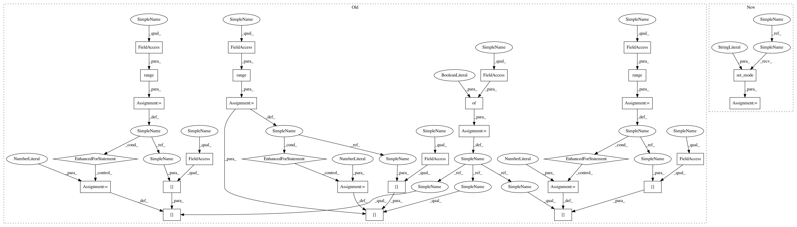

985a8dba993da323aeb1656169521e5f868372a4,basenji/rnn.py,RNN,test,#RNN#Any#Any#Any#Any#Any#,688
Before Change
si = 0
// setup feed dict for dropout
fd = {self.is_training:False}
for li in range(self.cnn_layers):
fd[self.cnn_dropout_ph[li]] = 0
for li in range(self.dcnn_layers):
fd[self.dcnn_dropout_ph[li]] = 0
for li in range(self.rnn_layers):
fd[self.rnn_dropout_ph[li]] = 0
// get first batch
Xb, Yb, NAb, Nb = batcher.next()
while Xb is not None:
// update feed dict
After Change
self.save_reprs = job.get("save_reprs", False)
def test(self, sess, batcher, rc_avg=False, return_preds=False, down_sample=1):
""" Compute model accuracy on a test set.
Args:
sess: TensorFlow session
batcher: Batcher object to provide data
rc_avg: Average predictions from the forward and reverse complement sequences
return_preds: Bool indicating whether to return predictions
down_sample: Int specifying to consider uniformly spaced sampled positions
Returns:
mean_loss: Mean loss across targets
mean_r2: Mean R^2 across targets
preds: Predictions
"""
batch_losses = []
// determine non-buffer region
buf_start = self.batch_buffer // self.target_pool
buf_end = (self.batch_length - self.batch_buffer) // self.target_pool
buf_len = buf_end - buf_start
// uniformly sample indexes
ds_indexes = np.arange(0, buf_len, down_sample)
// initialize prediction and target arrays
preds = np.zeros((batcher.num_seqs, len(ds_indexes), self.num_targets), dtype="float16")
targets = np.zeros((batcher.num_seqs, len(ds_indexes), self.num_targets), dtype="float16")
targets_na = np.zeros((batcher.num_seqs, len(ds_indexes)), dtype="bool")
si = 0
// setup feed dict
fd = self.set_mode("test")
// get first batch
Xb, Yb, NAb, Nb = batcher.next()
In pattern: SUPERPATTERN
Frequency: 3
Non-data size: 29
Instances
Project Name: calico/basenji
Commit Name: 985a8dba993da323aeb1656169521e5f868372a4
Time: 2016-12-26
Author: drk@calicolabs.com
File Name: basenji/rnn.py
Class Name: RNN
Method Name: test
Project Name: calico/basenji
Commit Name: 985a8dba993da323aeb1656169521e5f868372a4
Time: 2016-12-26
Author: drk@calicolabs.com
File Name: basenji/rnn.py
Class Name: RNN
Method Name: predict_genes
Project Name: calico/basenji
Commit Name: 985a8dba993da323aeb1656169521e5f868372a4
Time: 2016-12-26
Author: drk@calicolabs.com
File Name: basenji/rnn.py
Class Name: RNN
Method Name: predict
Project Name: calico/basenji
Commit Name: 985a8dba993da323aeb1656169521e5f868372a4
Time: 2016-12-26
Author: drk@calicolabs.com
File Name: basenji/rnn.py
Class Name: RNN
Method Name: test